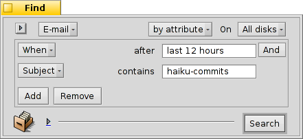

| Hakemisto |
|
Haiku's mail system Using labels Using queries More tips |
Työpaja: Sähköpostin hallinta
Tämä työpaja vilkaisee, kuinka sähköpostia hallinnoidaan Haikussa. Se otaksuu, että sähköpostipalvelu on asetettu oikein Sähköpostiasetukset-sovelluksella ja Sähköposti-sovelluksen perusominaisuudet ovat sinulle tuttuja.
 Haikun sähköpostijärjestelmä
Haikun sähköpostijärjestelmä
Jos tulet Haikuun muista käyttöjärjestelmistä, olet luultavasti käyttänyt suuria sovelluksia kuten MS Outlook tai Mozillan Thunderbird. Sinun on asetettava ne kirjoittamalla kaikki tiedot sähköpostipalvelimien osoitteista jne. ja ne käyttävät omia yhteystietotietokantojaan. Ne ottavat huolehtiakseen sähköpostin lähettämisestä ja noutamisesta sekä tallentavat ne johonkin suureen erikoistiedostoon.
Sähköpostiasiakassovelluksen vaihtaminen on melkoinen hässäkkä vaatien tiedoston vientiä ja tuontia sekä muuntamista. Useamman kuin yhden asiakasohjelman käyttäminen rinnakkain sen tarkistamiseksi, mitä on saatavilla ei myöskään onnistu ilman hässäkkää.
Haikun sähköpostijärjestelmä on erilainen. Se on jaettu erillisiin pienempiin moduuleihin.
Siinä on mail_daemon-taustaprosessi, joka huolehtii viestinnästä sähköpostipalvelimiesi kanssa. Sähköpostiasetukset -ohjelma on yksi keskeinen paikka asettaa sähköpostitilisi ja esimerkiksi se, kuinka usein ne tarkistetaan.
Jokainen noudettu tai lähetetty viesti tallennetaan otsaketietoineen (kuten lähettäjä, aihe, päivämäärä) ja tilatietoineen (kuten Uusi, Vastattu, Lähetetty) yhtenä yksittäisenä sähköpostitiedostona BFS-attribuutteihin. Tämä ottaa käyttöön niiden etsinnän/suodattamisen Haikun nopeiden kyselyjen avulla.

Koska jokainen sähköpostiviesti on erillisessä tiedostossa, niiden katsominen on yhtä helppoa kuin kansion (tai kyselytuloksen) kuvien selaaminen ShowImage-sovelluksella. Jättämällä Seuraaja-ikkunan auki näet parhaillaan katsottavan tiedoston siirtyvän valinnan samalla kun käytät edellinen/seuraava -painiketta niiden läpi kulkemiseen.
Koska ne ovat riippumattomia tiedostoja, jonkun toisen selaimen kuin Haikun Sähköposti ei aiheuta ollenkaan mitään vaikeuksia.
Samalla tavalla uuden viestin luomisen tulos on vain toinen tiedosto, joka ojennetaan mail_daemon-taustaprosessille, joka ottaa huolehtiakseen sen lähettämisestä. Yhteystietohallinta on alistettu Ihmiset-sovellukselle.
Pähkinänkuoressa, missä muut sähköpostiasiakasohjelmat tekevät kaiken, viestinnän sähköpostipalvelimen kanssa ja tarjoavat näkymän kaikkiin sähköpostiviesteihin ja työkalut viestien etsintään ja suodattamiseen, Haiku käyttää pienempien työkalujen ketjua ja yleistä tiedostohallintaa:
mail_daemon-taustaprosessi sähköpostiviestien noutamiseksi ja lähettämiseksi ja tallentamiseksi normaaleina tiedostoina.
Seuraajaikkunoita ja kyselyitä sähköpostitiedostojen löytämiseksi ja näyttämiseksi.
Sähköposti-sovellusta sähköpostitiedostojen katsomiseen ja uusien viestien luomiseen tukeutuen Ihmiset-sovelluksen järjestelmänlaajuiseen yhteystietohallintaan.
Erityisesti Seuraajan ja kyselyjen käyttö sähköpostiviestien hallintaa on tehokas ajatus. Kokemus, jonka saat, on siirrettävissä mihin tahansa muuhun tiedostopulmaan. Olkoon se kuvia, musiikkia, videota, yhteystietoja tai muita asiakirjoja, Seuraajan käyttäminen on kaiken tiedostohallinnan ydintä.
Parannukset kaikkiin näihin järjestelmiin eivät koske vain sähköpostien lähettämistä, vaan kaikkia sovelluksia, jotka käyttävät niitä.
Using labels
Kun selaat äskettäin saapunutta sähköpostia, haluat palata joihinkin niihin myöhemmin ajatellaksesi niitä perusteellisemmin. Vaikka voisit käyttää sähköpostiohjelman valikon pitämään ne sähköpostiviesteinäsi ”Uudet viestit”-kyselyllä, asioilla on tapana kasaantua sillä tavoin...
Yksi ratkaisu olisi tietysti aloittaa vastaus ja tallentaa se luonnoksena. Mutta sinun ei odoteta kirjoittavan vastausta ja vain haluavan lukea sähköposti uudelleen myöhemmin, se ei ole ideaalitilanne.

Better use to create a new label with or choose an existing label to categorize your mail. For example, you could call the label "Later", and then query for that when you find more time.
Or you use different labels for specific projects. For example, I created a label "HUG" (for "Haiku user guide") under which I collect every mail that may influence the contents of the user guide, like commit messages about code changes that alter or introduce some feature or anything else I feel could improve the user guide.
In any case, try to keep the label name short. That way it always fits in a normally wide "Label" column in Tracker.
Once you've dealt with the email, you can use to clear the email's label attribute.
Labels are saved in ~/config/settings/Mail/labels, which is opened when you choose . Here you can add, delete or rename your labels. Conveniently, each label file is also a query, meaning you can doubleclick it to start a query for emails with that label. Handy to check first before deleting a label that you think you don't need anymore.
You don't have to open an email with the Mail application to set its label. With the Tracker add-ons Label as… you can select some email files and set or remove their label in one go.
Käytetään kyselyjä
Tietysti voit määritellä kansion kaiken sähköpostisi tallentamiseen. Voit avata sen ja siellä on kaikki sähköpostisi. Mutta ajan mittaan kansio tulee täyteen ja viestien näyttäminen kestää yhä kauemmin, koska tuhansien tiedostojen ja niiden attribuuttien jäsentämiseen kuluu aikaa. Enimmäkseen et todella välitä kaksi vuotta vanhoista sähköpostiviesteistä nigerialaisesta prinssistä ja heidän perintöpulmista ...
Kyselyt pelastukseksi!
By using queries, you can narrow down the view of your mails. Actually, the mailbox icon in the Deskbar uses queries. Right-click the icon to open its context menu:

Alivalikko kyselee tilaa ”Luonnos”, jonka Sähköposti-sovellus asettin viestiä tallentaessasi.
ja ovat vain linkkejä tavallisiin kansioihin (ja mielestäni ne eivät ole kovin hyödyllisiä).
Alivalikko kansoitetaan kyselemällä sähköpostiviestien ”Uusi”-tilaa (kysely on muuten sama, kuin se, jota käytetään vaihtamaan sähköpostikuvake näyttämään joitakin kirjaimia).
You can add your own queries (or folders, applications, scripts etc.) to that context menu too, by putting them or links to them into ~/config/settings/Mail/Menu Links. In the screenshot above, for example, the label folder ~/config/settings/Mail/labels was linked there, to have quick access to labeled emails from the the mailbox icon of the Deskbar.
Kyselyesimerkit
Tässä on muutamia esimerkkejä hyödyllisistä kyselyistä:
 |
 |
| This finds all mails with the label "Later". | Tämä löytää kaikki sähköpostiviestit viimeisen 2 päivän ajalta. |
 |
 |
| Tämä löytää kaikki Ingo Weinholdin postittamat sähköpostiviesttit viimeisen 2 viikon ajalta. | Tämä löytää kaikki sähköpostiviestit Haiku commit listalta viimeisen 12 tunnin ajalta. |
Lisävihjeitä
Jos et tallenna kyselyä tilaksi ”Kysely” vaan tilaksi ”Kyselymallinne”, sen kutsuminen ei näytä tulosikkunaa, vaan sen sijaan Etsi... -ikkunan. Sillä tavalla voit helposti vaihtaa esimerkiksi aiheen tai lähettäjän etsintämerkkijonon, tai vaihtaa "2 päivää" aikarajan ajaksi "3 päivää".
Aktivoimalla "type-ahead filtering"-suodatus Seuraaja-asetuksissa sallii sinun nopeasti suodattaa kyselytuloksia vielä edelleen. Usein ei riitä kysyä kaikkia sähköpostiviestejä viimeisen 3 päivän ajalta ja tehdä niille sieltä type-ahead-suodatus. Suuri etu on, että sinun ei tarvitse tarkkaan määritellä, mitä attribuuttia etsitään, koska kaikki näytetyt käsitellään suodatuksen yhteydessä.
When you're managing your emails via queries - and why wouldn't you? - you should configure a DefaultQueryTemplate that shows all the email attributes you normally want to see in a query result window, like Status, From, Subject, When.
First, you create a folder /boot/home/config/settings/Tracker/DefaultQueryTemplates/text_x-email. Then do one of your usual email queries and change the displayed attributes and window size and position of the result window to your liking. Now simply from its menu, open the newly created text_x-email folder, and there.